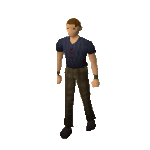
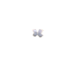

")
Agility - Extra Features
Training Hints and Tips | Advanced Courses | Summoning Familiars | Agility Skill Bonuses
Barbarian Assault Double XP | Dungeoneering | Quests
Barbarian Assault Double XP | Dungeoneering | Quests
Training Hints and Tips
- The best tactic to train Agility is to simply work your way through the courses, in order of difficulty.
- Make training fun: try playing a game of Gnomeball with your friends, or racing them around the courses.
- Combine your Agility skill with Herblore by training in the Brimhaven Agility Arena. Trade your tickets for herbs, or for extra Agility experience.
- Train your Agility skill alongside Thieving by visiting the Rogues' Den.
Advanced Courses
Those more advanced in the Agility skill will find that the gnomes and barbarians have an extra challenge available in the form of advanced courses. These start part-way through the courses, providing an optional challenge for improved experience, as well as the lure of new clothes to help out with your Agility training.
If you complete 250 'perfect' laps (without failing any of the obstacles) of the Gnome Stronghold advanced course, you will be eligible for Agility legs. Completing 250 perfect laps of the Barbarian advanced course will earn you an Agility top. Speak to one of the gnome trainers or Gunnjorn to claim your reward. Agility legs reduce your weight by 10kg; the Agility top reduces your weight by 12kg. In addition to this, they have some surprising defensive bonuses.
| Item | Levels Required |
||||||||||||||||||
| Attack Bonuses | Defence Bonuses | Other | |||||||||||||||||
![[Image: Stab]](../../img/main/kbase/table_text/stab1.gif "Stab") |
![[Image: Slash]](../../img/main/kbase/table_text/slash1.gif "Slash") |
![[Image: Crush]](../../img/main/kbase/table_text/crush1.gif "Crush") |
![[Image: Magic]](../../img/main/kbase/table_text/magic1.gif "Magic") |
![[Image: Range]](../../img/main/kbase/table_text/range1.gif "Range") |
|
|
|
|
|
![[Image: Summoning]](../../img/main/kbase/table_text/summoning1.gif "Summoning") |
![[Image: Strength]](../../img/main/kbase/table_text/strength1.gif "strength") |
![[Image: Prayer]](../../img/main/kbase/table_text/prayer1.gif "Prayer") |
|||||||
![[image]](../../img/main/kbase/skills/agility/items/agility_top.gif) Agile top |
35 35 |
+ 0 | + 0 | + 0 | + 0 | + 0 | + 40 | + 40 | + 40 | + 40 | + 40 | + 30 | + 0 | + 0 | |||||
![[image]](../../img/main/kbase/skills/agility/items/agility_legs.gif) Agile legs |
35 35 |
+ 0 | + 0 | + 0 | + 0 | + 0 | + 25 | + 25 | + 25 | + 25 | + 25 | + 10 | + 0 | + 0 | |||||
Summoning Familiars
Using the Summoning skill, you'll find that there are a few familiars that might be useful for training your Agility. Of particular note is the spirit terrorbird, whose special move, 'Tireless Run', boosts your Agility and restores your run energy. In addition, the stranger plant familiar will occasionally find strange fruit, which is handy for restoring your run energy.
Agility Skill Bonuses
By raising your Agility, you can receive greater rewards from your Fishing, Thieving and Hunter skills.
There is a chance of receiving bonus tuna, swordfish and shark when you have a high enough Agility and Fishing level. The chance of getting a bonus fish increases as your Agility increases, but there is an upper limit at which your chances will not increase (shown in the table below). You will not receive additional experience for gaining bonus fish.
The following levels are the exact levels required to receive multiple fish; unlike Runecrafting sloping, you do not gain a 'chance' of receiving a bonus fish if you are close to achieving the Agility or Thieving requirement. The following levels apply to both fishing and barbarian fishing.
|
Fish |
Fishing level |
Agility level |
Agility level (Upper limit) |
![[image]](../../img/main/kbase/items/food/fish/tuna1.gif) Tuna |
35 |
35 |
70 |
![[image]](../../img/main/kbase/items/food/fish/swordfish1.gif) Swordfish |
50 |
50 |
80 |
![[image]](../../img/main/kbase/items/food/fish/shark1.gif) Shark |
76 |
76 |
99 |
Your Agility level also affects the loot you gain from pickpocketing. It is possible to receive two, three or even four times the usual loot from any successful pickpocketing attempt, depending on your Agility and Thieving levels. You will not receive any additional Thieving experience for receiving multiple loot.
The following levels are the exact levels required to receive multiple loot; unlike Runecrafting sloping, you do not gain a 'chance' of receiving a x2 multiplier if you are close to achieving the Agility or Thieving requirement. The following are only examples of the level requirements - all pickpocketable targets can be used to gain multiple loot:
|
Name |
Requirements for x2 Loot |
Requirements for x3 Loot |
Requirements for x4 Loot |
|  Man |
11 1 |
21 11 |
31 21 |
![[image]](../../img/main/kbase/skills/thieving/npc/master_farmer.gif) Master farmer |
48 38 |
58 48 |
68 58 |
![[image]](../../img/main/kbase/skills/thieving/npc/paladin.gif) Paladin |
80 70 |
90 80 |
- - |
Finally, it is possible to catch a butterfly barehanded using your Agility. Although you receive no butterfly, you will not need a butterfly jar and you will will snag plenty of Hunter XP (and some Agility XP) should you be able to catch one:
|
Butterfly |
Hunter level |
Agility level |
Hunter XP gained |
Agility XP gained |
| Ruby harvest | 80 |
75 |
300 | 50 |
![[image]](../../img/main/kbase/skills/hunter/npcs/sapphire_glacialis.gif) Sapphire glacialis Sapphire glacialis |
85 |
80 |
400 | 70 |
| Snowy knight | 90 |
85 |
500 | 100 |
![[image]](../../img/main/kbase/skills/hunter/npcs/black_warlock.gif) Black warlock Black warlock |
95 |
90 |
650 | 125 |
Barbarian Assault Double XP
It is possible to get double XP when completing agility courses (but not the Agility Pyramid or Werewolf Skullball). Travel to Barbarian Assault and talk to Commander Connad to receive a penance horn; this can be charged by playing waves of the activity, as long as you ensure that the switch in the waiting room is changed to 'XP'. With charges on the horn, you will automatically receive double XP when training Agility. You can then 'check-potential' the horn at any time to find out how many charges remain on it.
Agility Training in Dungeoneering
It is possible to train all of your skills while dungeoneering; having said that, Agility is one of the less frequently tested skills in Daemonheim. Although your run energy is useful in avoiding difficult foes, you can only gain Agility experience by completing agility skill doors.
- To find out more about skill doors and the basics of dungeoneering, please click here
Quests with Agility Experience Rewards
For information on which quests reward you with Agility experience, see the Agility Rewards page.
Click here to view the Agility FAQs

More articles in
Agility (Members Only)
|
|
|
Further Help
If this article does not help you, you may find the following sections of the RuneScape site helpful:
|
|